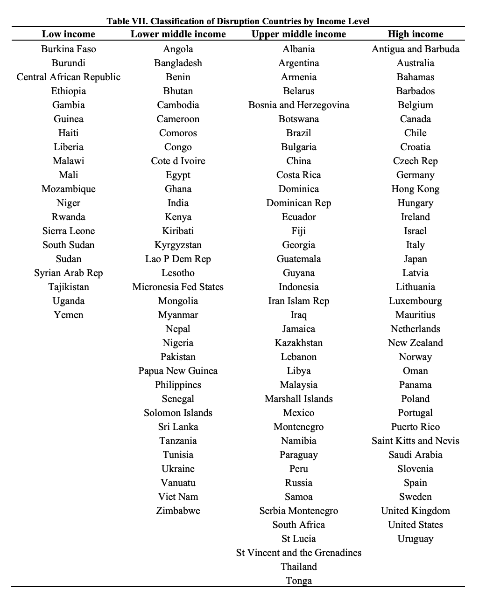
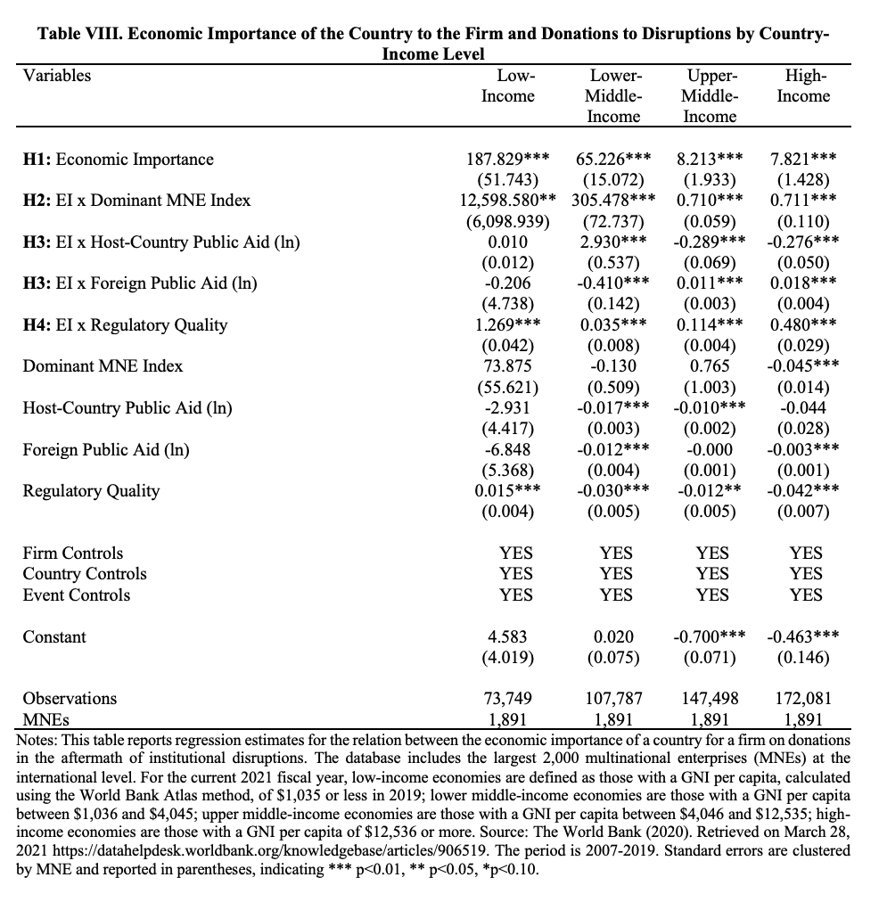

Country Income Level
We examine whether the effects are driven by level of country income and employ the World Bank’s classification of country groups for low, lower-middle, upper-middle, and high-income countries (The World Bank, 2021). For the current 2021 fiscal year, low-income economies are defined as those with a GNI per capita, calculated using the World Bank Atlas method, of $1,035 or less in 2019; lower middle-income economies are those with a GNI per capita between $1,036 and $4,045; upper middle-income economies are those with a GNI per capita between $4,046 and $12,535; high-income economies are those with a GNI per capita of $12,536 or more(The World Bank 2021). We performed split sample analysisfor each group.
 The table above indicates that in lower income countriesthere is not evidence ofa crowding out effect of public aid in the donation of economically connected MNEs. This aligns with evidence that the financial gap for relief and recovery from large shocks for lower income countries is substantial (Becerra et al., 2014, 2015; High-Level Panel on Humanitarian Financing, 2016). Combined with the comparatively large coefficient of economic importance, the results indicate that economically connected MNEs in lower income countries have high incentives to help the country market recover regardless of the contribution from public sources (because the public resources are rarely sufficient).
For lower-middle income countries, we observe that economically connected MNEs reduce their contribution when they perceive substantial foreign aid. This result is consistent with studies that indicate that the financial gap for these countries is the lowest (Becerra et al., 2014; High-Level Panel on Humanitarian Financing, 2016). In other words, economically connected MNEs estimate that foreign aid will be an important funding resource. On the other hand, the impact of host-country public aid is positively associated with the donation for economically connected MNEs. This effect may be driven by the perceived need when the host-country must give.
For upper-middle income and high income countries, the results are consistent with our baseline analysis. Funding from the host-country has a substantial crowding out effect on giving by economically connected MNEs. On the other hand, the outpouring of foreign public aid is positively associated with the donation of economically connected MNEs. This is aligned with MNEs perceiving a greater degree of disruption when there is more foreign public aid. In fact, appeals for emergency aid, administrated at the global level by multilateral agencies, are rarely issued for upper-middle and high-income countries. The exceptions are for fat-tailed disruptions, which are captured by our statistics.This means that appeals for foreign aid are informative of the expected magnitude of the impacts. They signal to managers the need for resources for relief and recovery.